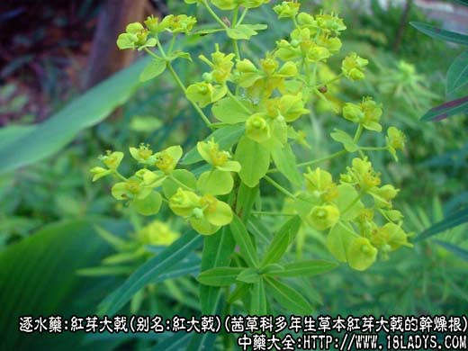
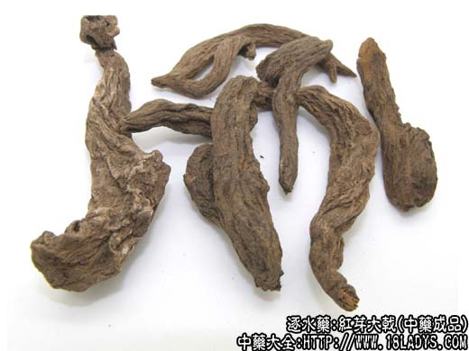
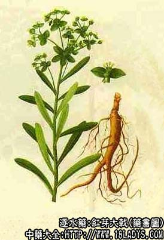

大戟为较常用中药，《神农本草经》列为下品。大戟来源有数种，目前市场上应用较广的品种，为茜草科植物红芽大戟，其次是豆科植物草大戟。这两种京津地区习用。此外还有部分地区习用大戟科植物京大戟。
①红芽大戟
别名：红大戟、大吉。
来源：为茜草科多年生草本植物红芽大戟的干燥根。均为野生。
产地：主产于广东、广西、云南、贵州、福建等省。
性状鉴别：大戟呈纺锤形，多弯曲不直。长约3～8厘米，直径约4～8毫米，表面棕褐色，粗糙，具多数不规则的纵皱，质较坚硬。断面红褐色不平坦，显放射状纹理。气无、味甘、微辛。
以根条肥壮色棕红、质坚实，无须根者为佳。
主要成分：含游离蒽醌类0.56%及结合性蒽醌类0.25%。
药理作用：与芫花相同，有峻泻和利尿作用，但效力比芫花弱，毒性也比芫略小。
炮制：醋制、切片。
性味：苦、寒。
归经：入肺、脾、肾经。
功能：攻积逐水、解毒。
主治：水肿胀满、痰饮积聚，痈肿疮毒。
临床应用：1、用于治疗胸、腹积水。适应症和用法与芫花相同。常与甘遂、芫花同用，如控涎丹，用于胸积水较轻者，有胁肋部隐痛，舌苔粘腻，呼吸迫促。用大戟时同样须注意：1、体虚者不要用，前人的经验是“弱者服之，或至吐血”；2、孕妇忌用；3、要照顾脾胃，用红枣和蜜糖缓和其对肠胃的刺激性。
2、外用治疮毒，要配山慈姑等清热解毒药，如紫金锭（成药）。
用量：多人丸散，每次0.9～1.2g，煎剂1.5～3g。
处方举例：控诞丹（三因方）：大戟、甘遂、白芥子等分，研末，装入胶囊，第一天服1.5g，以后每天加0.3g，渐加至3g，用大枣5～10枚煎汤，清晨空腹送服，共用5～6天，治胸腔积液。
②草大戟
来源：为豆科植物胡枝子属多年生灌木美丽胡枝子和大叶胡枝子的干燥根皮，野生。
产地：主产于江南各省。秦岭以南均有分布。
性状鉴别：根皮长形，两边多向内卷，呈筒状或劈裂的半筒状。长约10～50厘米，宽约0.5～1.5厘米，厚约1～3毫米。栓皮棕黑色，显粗糙，内皮层棕红色，质柔韧，纤维性极强。气无味、淡微涩。
以条长、色棕红、质柔韧为佳。
炮制：醋制、切咀。
功能：大戟只供外用作洗药。
主治：关节肿痛。
③京大戟
来源：为大戟科多年生草本植物大戟的干燥根，野生。
别名：将军草、膨胀草、腹水草、龙虎草（江苏）、草大戟（山西）。
产地：全国各地均有分布。
性状鉴别：根呈圆柱形，有分枝，长约15～20厘米，直径约1.5～3厘米，表面灰棕色，粗糙有纵皱纹及横生皮孔。顶端多膨大，其上有许多凹窝（茎痕）。质坚硬。折断面纤维性。类白色至灰棕色。气无、味苦涩。
以根条均匀，质嫩无须根者为佳。
炮制：同红芽大戟。
效用：同红芽大戟。
注：1、按京大戟为大戟科植物大戟的根与历代本草所载之品相符。但不知始于何时被茜草科植物红芽大戟所取代。据《中药志》第一册第41页大戟成分项下记载京大戟甙及橡胶样物质。红芽大戟含有游离蒽醌类0.56%；含结合性蒽醌类0.25%。经尝试京戟苦涩。红芽大戟甘而微辛。两者在成分和性味上均有显著的不同。但一般医药书籍对两者的性味功能主治均作相同的记载。但京大戟长于逐水，红芽大戟长于治疮，应根据其成分、性味，分别使用，不应混淆。京大戟有毒，茜草科植物一般不含有毒成分，红芽大戟是否有毒？外用草大戟是否有毒？应否醋制？应予研究，以便在使用时及饮片加工炮制过程中改进。
2、除上述情况外，还有少数地区习用的大戟，如新疆地产地销的准噶尔大戟。江苏省徐州地区产地销的芫花根。以及主产于内蒙古、河北、云南、贵州等地，而在陕西（安康）、湖南、湖北、江西、云南等地习用的瑞香科狼毒、药品名棉大戟。以上数种大戟的疗效不同，尤其是瑞香科狼毒，李时珍云：“其根皮柔韧如绵，甚竣峻利，弱者服之至吐血，不可不知。故使用时宜注意。”
3、本药反甘草。